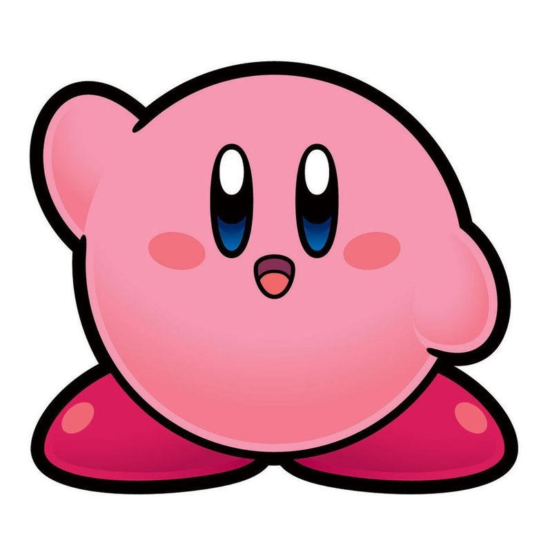
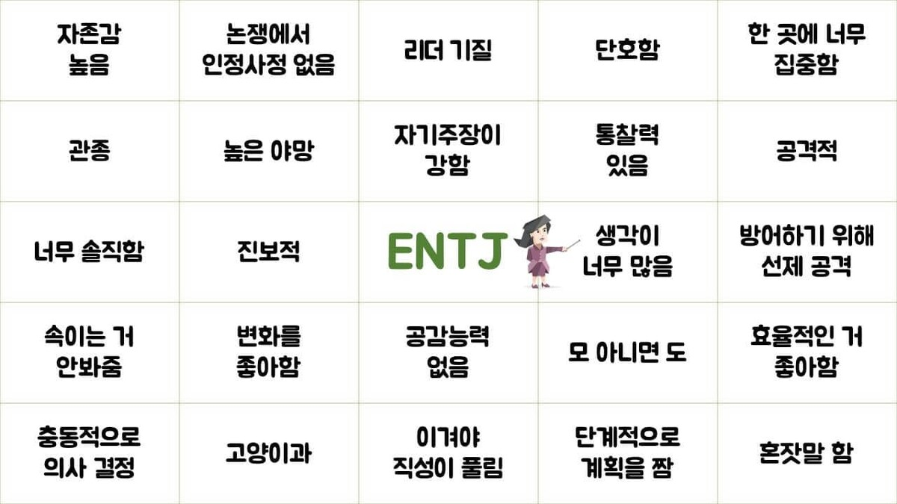
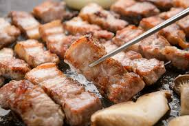
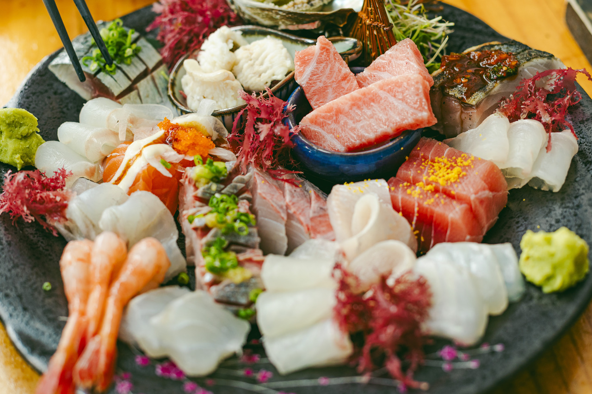
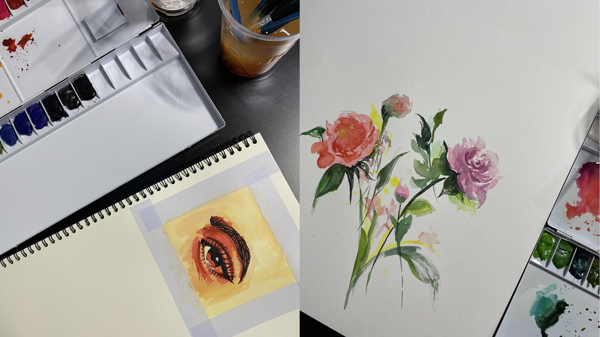
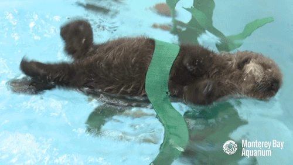

제 이름은 심지수입니다.

저의 MBTI는 ENTJ입니다.
단어로 표현하자면 '지휘관, 통솔자' 같은 성격을 가지고 있습니다.
태어난 곳
제가 태어난 곳은 전주입니다. 전라북도에 위치한 도시이며 음식으로 유명한 지역입니다.
성인이 되고 나서 대학교 진학으로 인해 수원으로 이사를 오게 되었습니다.
가보고 싶은 곳 / 가봤던 곳
<가보고 싶은 곳>


제가 가보고 싶은 곳은 스위스입니다.
중부 유럽에 위치한 국가이며 연상되는 이미지로는 알프스 산맥이 있습니다.
스위스는 대한민국과 비슷하게 산이 많은 지역입니다. 만년설과 빙하가 있는 산의 자연경관을 보고 싶습니다.
<가봤던 곳>
가봤던 곳 중 기억에 남는 곳을 꼽자면 친구와 즉흥으로 다녀온 충북 단양입니다.
서로 힘든 시기가 겹쳐서 갑자기 어디론가 떠나고 싶은 마음이 들었고
즉시 출발하여 멋진 석산과 고수동굴을 구경하고 돌아온 뜻깊은 힐링여행이었습니다.
내가 먹고 싶은 것
 저는 고기와 회를 가장 좋아합니다. 먹고 싶은 음식은 고기와 회입니다.
내가 하고 싶은 것
<요리하기>
먼저 제가 원래 즐겨하고 좋아하는 취미를 소개하겠습니다.
제가 좋아하는 취미 중 하나는 요리입니다. 어렸을 때부터 요리하는 것을 좋아했습니다.
김치와 피클, 과일청 등은 수월하게 만드는 편이며 한식뿐만 아니라 다양한 나라의 요리를 만들고 즐깁니다.
최근에 들어서는 제빵도 연습하고 있습니다.
<뜨개질하기>
제가 좋아하는 취미 중 하나는 뜨개질입니다.
가방이나 에어팟 케이스 등 직접 만들어 사용합니다.
뜨개질을 하면 잡생각이 줄어들고 이것에 집중하게 되어 스트레스 받을 때 유용한 취미입니다.
<그림그리기>
제가 좋아하는 취미 중 하나는 그림그리기입니다.
그림을 따로 배워본적은 없으나 중학생때 담임선생님이 예고 진학을 추천하셨으며
그 이후로도 간간이 취미로 그리고 있습니다. 요즘은 수채화에 흥미를 느끼고 있습니다.
<식물 키우기 및 운동>

마지막으로 식물 키우기 및 운동이 있습니다.
어렸을때부터 본가 마당에서 식물을 길러왔으며 좋아했습니다.
현재는 집안 구석구석에 화분을 기르고, 작은 베란다 앞에서 작물을 길러 수확해 먹고 있습니다.
또한 운동은 고등학생때까지 태권도를 취미로 즐겨왔으며 각종 대회에 나갔었습니다.
현재는 헬스를 즐겨하고 있습니다.
